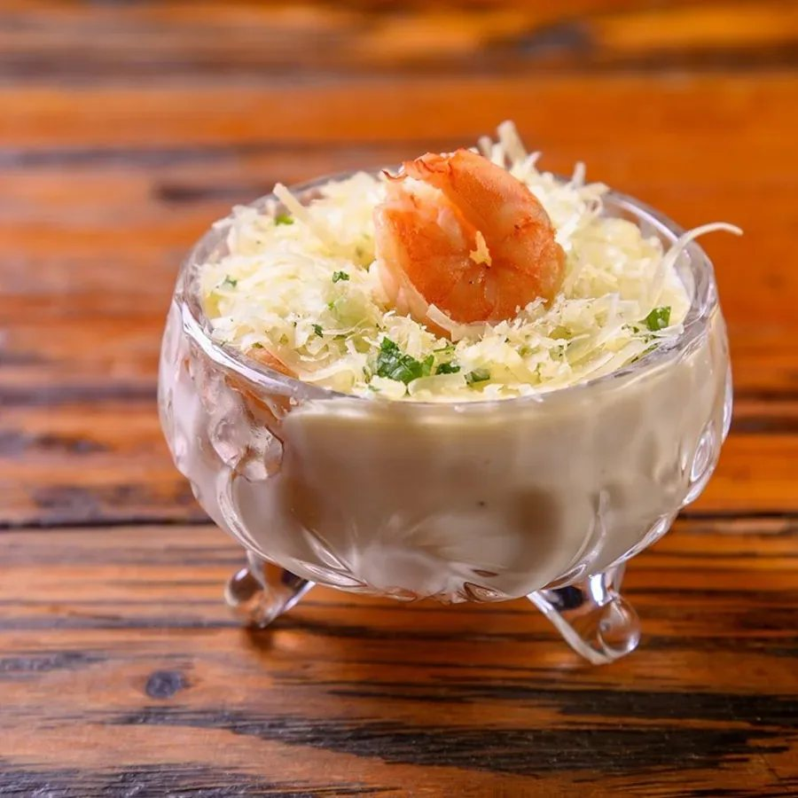
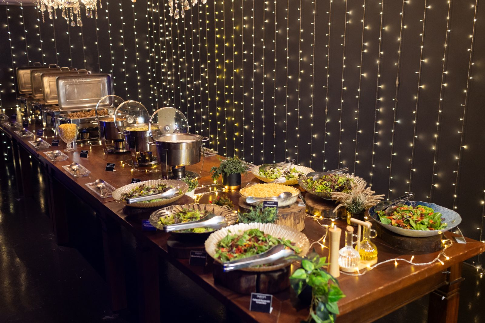
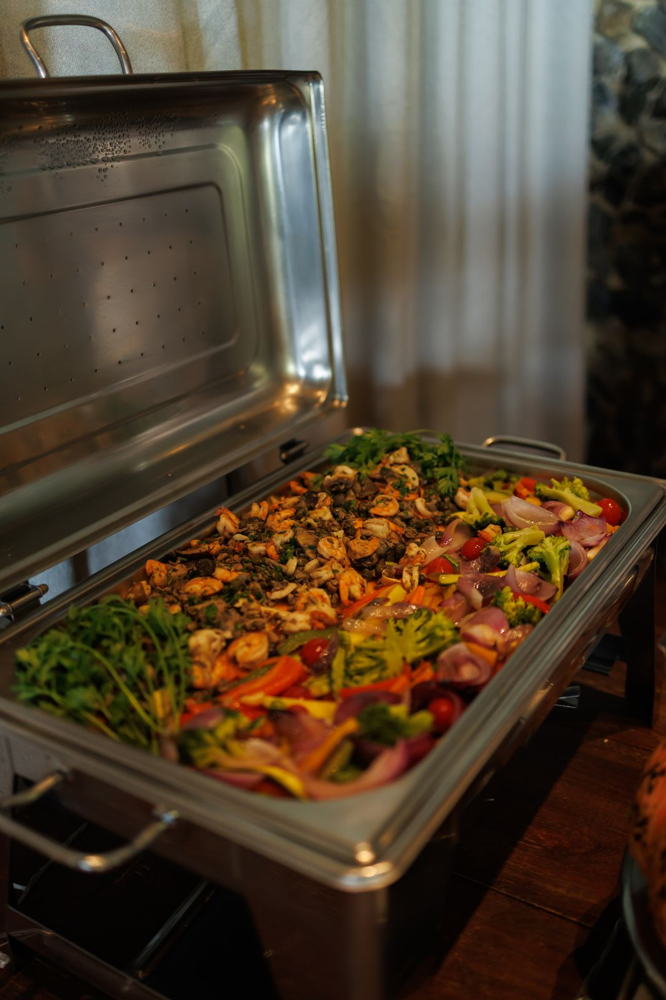
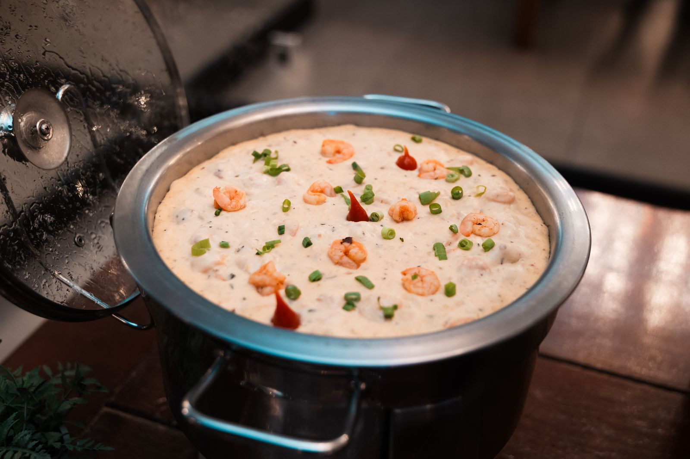

Na mesa do casamento está quem faz parte da história de vocês: o pai que sonhou com esse dia, a avó que viu vocês crescerem, os amigos que acompanharam cada desafio. Cada prato vira lembrança na memória de quem vocês mais amam.
As entradas
Depois do "sim", vocês saem pras fotos mais bonitas da vida, e os convidados ficam. É aí que as entradas entram: circulando pelo salão enquanto todo mundo se acomoda, conversa e brinda. Quando vocês voltarem, ninguém ficou esperando: a festa já começou.


O jantar
Um jantar pensado
pra surpreender.
É o único momento em que todas as gerações da história de vocês se sentam juntas. Um buffet feito pra encher os olhos de quem chega e ser lembrado por quem prova.
Foto de evento real
Ninguém fica de fora
Uma gastronomia pensada em cada detalhe pra agradar todos os paladares.

O cardápio já nasce com opções pra quem tem intolerância a glúten ou lactose e pros vegetarianos. Avisando a gente sobre os convidados, as escolhas certas entram no buffet, e todo mundo aproveita a noite do mesmo jeito.

Cada prato,
uma memória.
Buffet Indaiá
Como funciona
-
Duas horas de buffet
São 2 horas de buffet servido, com reposição constante e sem limitação: apresentação impecável pra cada convidado que vai se servir, do primeiro ao último.
-
Vocês escolhem, a gente prepara
Cada menu mostra quantas opções vocês escolhem em cada parte: entradas, principais, massas, guarnições e saladas. Dentro do número, a combinação é livre.
-
Todo convidado bem servido
O cardápio tem pratos pensados pra quem não pode glúten ou lactose. É só avisar sobre os convidados que a gente cuida do resto.
-
Decidido na Reunião Final
As escolhas do cardápio são registradas na Reunião Final, com o nosso time do Pós Vendas, cerca de 30 dias antes do evento. Até lá, podem ser alteradas sem transtorno.
Bom saber: aos valores de cada menu é somada a taxa de serviço de 15% sobre o consumo. Os valores de tabela podem ser reajustados até a data do evento, mas quem já tem contrato fechado mantém os preços combinados: valores atualizados valem apenas pra adicionais e alterações feitas depois da contratação. As fotos deste material são de eventos reais da Eventos Indaiá. Algum ingrediente pode mudar conforme a época do ano. Nesse caso, a troca é sempre combinada com vocês.

Daqui a quinze anos, um prato vai trazer alguém de volta pra essa noite.